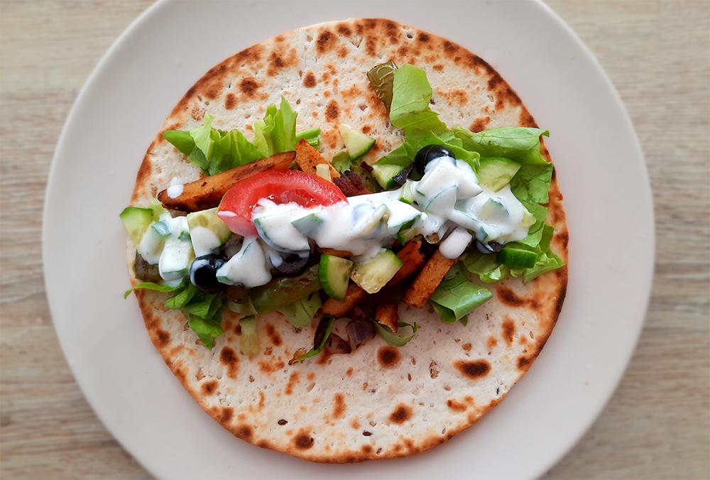

amerikaanse caesar salade
coq au vin
kip in de hoed
salade met gegrilde ananas
biefstuk chimichurri & gegrilde groenten
avocado salade
bami met spinazie

japanse beef teriyaki
chili sin carne met guacamole
italiaanse caponata
chorizosoep
enchiladas
koreaanse bibimbap
falafelwrap
zwitserse kaasfondue
griekse vega gyros wraps
Ook lekker met Libanees platbrood in plaats van wraps.

Bereidingsduur: 30 minuten
Aantal personen: 2
Ingrediënten:
175 gram (vegetarische) kipstukjes
enkele blaadjes sla
1 paprika
eventueel tomaat
1 rode ui
2 eetlepels olijven
0,25 stuk komkommer
4 stuks wraps
2 eetlepels tzatziki kruiden
1 theelepel komijn
1 theelepel tijm
1 theelepel paprikapoeder
1 theelepel italiaanse kruiden
150 gram griekse yoghurt
naar smaak peper en zout
optioneel libanees platbrood
175 gram (vegetarische) kipstukjes
enkele blaadjes sla
1 paprika
eventueel tomaat
1 rode ui
2 eetlepels olijven
0,25 stuk komkommer
4 stuks wraps
2 eetlepels tzatziki kruiden
1 theelepel komijn
1 theelepel tijm
1 theelepel paprikapoeder
1 theelepel italiaanse kruiden
150 gram griekse yoghurt
naar smaak peper en zout
optioneel libanees platbrood
Instructies:
1. Kruid de kipstukjes met komijn, tijm, paprikapoeder, Italiaanse kruiden en peper en zout.
2. Snijd de ui in snippers en de paprika in reepjes. Snijd de tomaat en olijven in kleine stukjes.
3. Grill de kipstukjes, paprika en ui in een grillpan. Maak de tzatziki door de yoghurt, komkommer en tzatziki kruiden te mengen.
4. Verwarm de wraps of het libanese platbrood kort en vul met de blaadjes sla, geroosterde kipstukjes, paprika, ui, olijven en tomaat. Verdeel hier wat tzatziki overheen en vrouw de wrap dicht.
1. Kruid de kipstukjes met komijn, tijm, paprikapoeder, Italiaanse kruiden en peper en zout.
2. Snijd de ui in snippers en de paprika in reepjes. Snijd de tomaat en olijven in kleine stukjes.
3. Grill de kipstukjes, paprika en ui in een grillpan. Maak de tzatziki door de yoghurt, komkommer en tzatziki kruiden te mengen.
4. Verwarm de wraps of het libanese platbrood kort en vul met de blaadjes sla, geroosterde kipstukjes, paprika, ui, olijven en tomaat. Verdeel hier wat tzatziki overheen en vrouw de wrap dicht.